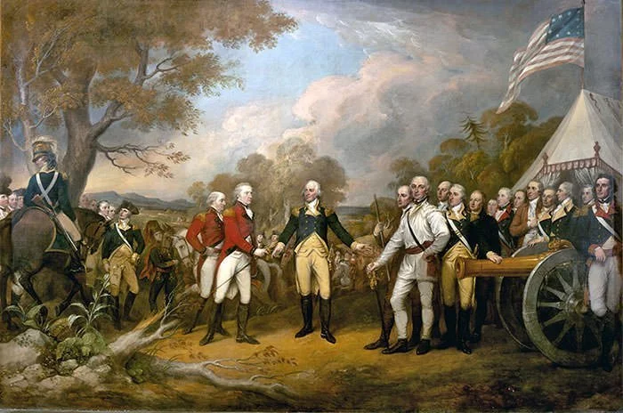
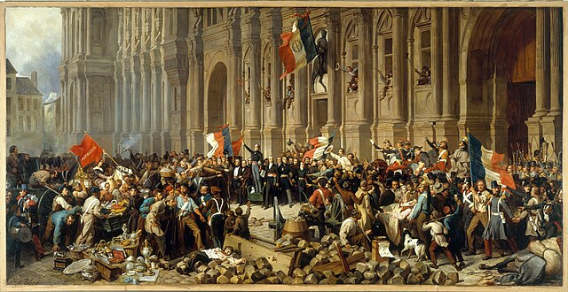
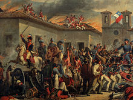

The Age of Revolution refers to the period from the late 18th century to the mid-19th century, characterized by a series of significant political, social, and economic upheavals across Europe and the Americas. This era saw the emergence of ideas related to democracy, human rights, and nationalism, which profoundly shaped the modern world. The revolutions during this time aimed to overthrow traditional monarchies, challenge aristocratic privileges, and introduce the principles of equality and liberty. The most famous examples of revolutions during this era include the American Revolution (1775–1783), the French Revolution (1789–1799), and the Latin American Wars of Independence. These movements resulted in the transformation of political structures and the rise of new ideologies, particularly liberalism and republicanism.
The American Revolution (1775–1783) was one of the defining events of the Age of Revolution, where the thirteen American colonies successfully fought for independence from British rule. The revolution was fueled by grievances over taxation without representation, restrictions on colonial trade, and British political interference. The American Revolution culminated in the Declaration of Independence in 1776, which articulated the colonies’ desire for self-governance based on democratic ideals and human rights. The victory of the colonies led to the establishment of the United States as an independent nation and inspired other revolutionary movements worldwide, particularly in France and Latin America. It also demonstrated that a colony could challenge a powerful empire and establish a new political order based on the principles of liberty and republicanism.
Why is it essential to learn Age of Revolution?
One of the primary reasons to study the Age of Revolution is to understand the origins of modern democracy. During this period, revolutionary movements across the globe challenged traditional monarchies and authoritarian systems, advocating for the establishment of more representative forms of government. The American Revolution, for example, laid the groundwork for democratic governance by creating a constitution that emphasized the separation of powers and individual rights. Similarly, the French Revolution introduced radical ideas about the equality of citizens and the rejection of absolute monarchy. These movements influenced political thought globally, helping to define modern democratic principles such as popular sovereignty, constitutional governance, and the protection of human rights. Learning about this era allows us to appreciate the struggles and achievements that led to the systems of government many countries have today.
The Age of Revolution was not only a political transformation but also a social revolution that reshaped society. Revolutionary ideals such as liberty, equality, and fraternity permeated societies, challenging established hierarchies and redefining social roles. In France, for example, the French Revolution abolished feudal privileges and sought to create a more egalitarian society. In Haiti, the successful slave revolt during the Haitian Revolution not only led to the establishment of an independent Black republic but also dealt a blow to the institution of slavery worldwide. These revolutions altered societal structures, affecting gender roles, class relationships, and even racial dynamics. By studying this period, we can trace the roots of modern social justice movements and understand how revolutionary ideas continue to inspire efforts for greater equality and social reform today.
The Age of Revolution had global implications that continue to shape the world today. Revolutionary movements, especially those in the Americas and Europe, inspired subsequent uprisings in colonies and oppressed regions across the globe. The Latin American Wars of Independence, for instance, were directly influenced by the American and French Revolutions, as local elites and common people alike sought to free themselves from colonial rule. Additionally, the economic changes brought about by these revolutions, such as the shift towards capitalist economies and industrialization, laid the foundations for modern economic systems. Understanding the global spread of these ideas helps us see how interconnected the world became during this period, and how revolutionary concepts of governance, economics, and society have had lasting legacies that continue to influence global affairs today.
Revolutions
The American Revolution
The American Revolution (1775–1783) was a pivotal conflict that marked the thirteen American colonies' struggle for independence from British rule. Sparked by growing discontent over British taxation without representation, the Revolution sought to establish a new government based on Enlightenment principles of democracy and individual rights. The conflict began with skirmishes in Lexington and Concord and evolved into a full-scale war. Key events include the Declaration of Independence in 1776, authored primarily by Thomas Jefferson, which articulated the colonies' desire for freedom and their commitment to inalienable rights such as life, liberty, and the pursuit of happiness. The war saw significant battles such as the Siege of Boston and the pivotal victory at Yorktown in 1781, which led to British surrender. The Treaty of Paris, signed in 1783, formally ended the war and recognized American independence. The subsequent creation of the U.S. Constitution in 1787 established a framework for democratic governance and the protection of individual liberties, influencing democratic movements worldwide and setting a precedent for future revolutions. More about American Revolution

Cr.: Learnodo Newtonic
The French Revolution
The French Revolution (1789–1799) was a radical period of social and political upheaval in France that fundamentally transformed the country's societal structure and governance. It began with widespread discontent over economic inequality, the burden of taxes on the common people, and the absolute power of the monarchy under Louis XVI. The Revolution's early phases included the storming of the Bastille in 1789, which symbolized the uprising against royal tyranny. The National Assembly, representing the common people, took significant steps to dismantle feudal privileges and introduced radical changes such as the Declaration of the Rights of Man and of the Citizen, which promoted equality and individual freedoms. The Reign of Terror, led by figures like Maximilien Robespierre, followed as revolutionary zeal led to mass executions and political purges. The Revolution culminated in the rise of Napoleon Bonaparte, who established the Napoleonic Code and centralized the French state, marking the end of the Revolution but setting the stage for future European conflicts and reforms. More about French Revolution

Cr.: Wikipedia
The Haitian Revolution
The Haitian Revolution (1791–1804) was a successful slave revolt in the French colony of Saint-Domingue that led to the establishment of Haiti as the first independent Black republic and the first post-colonial independent nation in Latin America. Enslaved Africans and free people of color, led by figures such as Toussaint Louverture and Jean-Jacques Dessalines, rose against French colonial rule and the brutal conditions of slavery. The revolution was influenced by the Enlightenment ideals of liberty and equality, as well as the turmoil of the French Revolution. Key events include the initial uprising in 1791, the abolition of slavery in 1794 by the French Revolutionary government, and the eventual declaration of independence in 1804. The Haitian Revolution had a profound impact on the Atlantic world, inspiring other enslaved and oppressed peoples, while also leading to the decline of slavery in other parts of the Americas. However, Haiti's subsequent political and economic struggles highlighted the challenges of post-revolutionary nation-building and external pressures from former colonial powers. More about Haitian Revolution
Cr.: Britannica
The Latin American Wars of Independence
The Latin American Wars of Independence (1808–1826) were a series of revolutionary movements that resulted in the independence of several Latin American countries from Spanish and Portuguese colonial rule. Influenced by the ideals of the American and French Revolutions, these wars were driven by a combination of local discontent, social inequalities, and the weakening of colonial powers due to the Napoleonic Wars in Europe. Prominent leaders such as Simón Bolívar, José de San Martín, and Miguel Hidalgo played crucial roles in these struggles. Bolívar, known as "El Libertador," led successful campaigns in northern South America, creating independent nations such as Gran Colombia. San Martín led the liberation of southern South America, including Chile and Argentina. Hidalgo's "Grito de Dolores" in 1810 marked the beginning of the Mexican War of Independence. By 1826, most of Latin America had achieved independence, leading to the formation of new republics and the end of colonial rule in the region. These revolutions not only reshaped the political map of Latin America but also set the stage for the development of new nations and their subsequent political and economic challenges. More about The Latin American Wars for Independence

Cr.: Wikipedia
Society
French Revolution
The French Revolution radically transformed French society, dismantling the hierarchical structures of the Ancien Régime and challenging the long-standing privileges of the aristocracy and clergy. Prior to the revolution, French society was divided into three estates: the clergy (First Estate), the nobility (Second Estate), and the commoners (Third Estate). The Third Estate, which included peasants, urban workers, and the bourgeoisie (middle class), bore the brunt of taxes and suffered from economic hardship. The revolution was sparked by widespread dissatisfaction among the commoners, especially after the Estates-General failed to address grievances about inequality and rising bread prices. As the revolution unfolded, the old social order was dismantled, and titles of nobility were abolished. Radical changes occurred, such as the introduction of the "citizen" as a universal identifier, symbolizing equality. However, the revolution also led to violence and social upheaval, particularly during the Reign of Terror, when thousands of perceived enemies of the revolution, including nobles and clergy, were executed.
Haitian Revolution
The Haitian Revolution (1791-1804) stands as a unique event in the Age of Revolution, where enslaved people led a successful revolt that abolished slavery and established Haiti as the first Black republic. Haitian society before the revolution was divided into rigid racial and class hierarchies: wealthy white plantation owners (grand blancs), poorer whites (petit blancs), free people of color (gens de couleur libres), and enslaved Africans who made up the majority of the population. The brutal conditions on the sugar plantations, where enslaved people were subjected to severe exploitation and inhumane treatment, sparked a rebellion. Led by figures like Toussaint L’Ouverture, the enslaved rose against the French colonial authorities. The revolution shattered the colonial social order, eliminating slavery and reducing the power of the French elite. Despite this victory, the new society faced severe challenges, including economic isolation and attempts by former colonial powers to reassert control, but the Haitian Revolution set a profound example of social change driven by the oppressed.
American Revolution
The American Revolution (1775-1783) also reshaped societal norms in the thirteen colonies, though the changes were less radical compared to the French or Haitian revolutions. Colonial American society before the revolution was stratified by class and race, with a landed gentry class dominating political and economic life, while slavery remained a foundational institution in the southern colonies. The revolution, inspired by Enlightenment ideals of liberty, equality, and self-governance, led to the emergence of a more egalitarian spirit among white men, with many small farmers and artisans playing active roles in the struggle for independence. However, the revolution did not extend these ideals to enslaved Africans, women, or Indigenous peoples. Despite this, the revolutionary rhetoric of freedom inspired later movements for abolition and women’s rights. The revolution also saw the rise of a new political elite, often drawn from the colonial middle and upper classes, who replaced British authority with homegrown republican institutions.
Latin American Independence War
In the early 19th century, the Latin American wars of independence also transformed society across the continent, breaking away from Spanish and Portuguese colonial rule. Before these revolutions, society in colonial Latin America was deeply stratified by race and class, with peninsulares (Spanish-born elites) occupying the highest positions, followed by creoles (American-born Spaniards), mestizos (mixed-race individuals), and Indigenous peoples and enslaved Africans at the bottom. The revolutions were fueled by creole dissatisfaction with Spanish rule and by Enlightenment ideas of self-governance. Leaders like Simón Bolívar and José de San Martín led armies of mestizos, Indigenous peoples, and freed slaves in the fight for independence. The post-revolutionary societies attempted to break the power of the peninsulares, but racial and class divisions remained entrenched in many regions. While slavery was abolished in some areas, Indigenous peoples and people of African descent continued to face discrimination and marginalization in the newly independent nations.
Religion
Family and gender roles during the Age of Revolution were both redefined and constrained by the political and social changes of the time. Revolutionary ideals often promoted the notion of individual rights and equality, but these were predominantly extended to men, while women were largely excluded from the political sphere. In the French Revolution, for instance, women played a crucial role as activists and participants in key events like the Women's March on Versailles, but they were denied formal political rights in the new government. Influential female figures like Olympe de Gouges, who authored the "Declaration of the Rights of Woman and of the Female Citizen," sought to challenge this exclusion but faced backlash, including execution. In family life, the patriarchal structure remained dominant, with men continuing to hold authority over women and children in both public and private life. In some revolutionary movements, such as the Haitian Revolution, enslaved women gained greater personal autonomy with the abolition of slavery, though they still faced gender-based limitations. Across different regions, gender norms remained largely traditional, even as revolutionary rhetoric called for societal transformation.
Family and Gender Roles
Family and gender roles during the Age of Revolution were both redefined and constrained by the political and social changes of the time. Revolutionary ideals often promoted the notion of individual rights and equality, but these were predominantly extended to men, while women were largely excluded from the political sphere. In the French Revolution, for instance, women played a crucial role as activists and participants in key events like the Women's March on Versailles, but they were denied formal political rights in the new government. Influential female figures like Olympe de Gouges, who authored the "Declaration of the Rights of Woman and of the Female Citizen," sought to challenge this exclusion but faced backlash, including execution. In family life, the patriarchal structure remained dominant, with men continuing to hold authority over women and children in both public and private life. In some revolutionary movements, such as the Haitian Revolution, enslaved women gained greater personal autonomy with the abolition of slavery, though they still faced gender-based limitations. Across different regions, gender norms remained largely traditional, even as revolutionary rhetoric called for societal transformation.
Daily Life
For the lower class during the Age of Revolution, daily life was marked by hardship, uncertainty, and struggle. In urban centers, particularly during the Industrial Revolution, factory work became a common reality for the lower class, including men, women, and even children. Work hours were long, often extending to 12-16 hours a day in dangerous and unhealthy conditions. Factories were poorly ventilated and overcrowded, leading to frequent accidents and illness among workers. Wages were meager, barely covering the cost of basic necessities like food and shelter. In rural areas, the lives of peasants and laborers were also difficult, as they continued to toil on agricultural estates, though the French Revolution brought some improvements, such as the abolition of feudal dues. The lower class lived in cramped and unsanitary conditions, whether in the overcrowded tenements of industrial cities or the simple cottages of rural villages. Malnutrition and disease were common, and healthcare was inaccessible to most. The rise of revolutionary movements, however, gave some in the lower class hope for change, as they saw an opportunity to challenge the old social order and demand better rights and conditions. The French Revolution, in particular, offered the prospect of land redistribution and an end to aristocratic privileges, though such promises were not always fully realized.
The middle class, or bourgeoisie, experienced a more dynamic and upwardly mobile existence during the Age of Revolution. This class, which included merchants, artisans, professionals, and intellectuals, was positioned between the working class and the aristocracy. As the Industrial Revolution advanced, the middle class expanded, with many gaining wealth through trade, manufacturing, and the rise of capitalist economies. For the bourgeoisie, daily life was centered around business, family, and social mobility. Men typically managed their businesses or practiced professions like law, medicine, or academia, while women often managed the household, though they had limited political or legal rights. Middle-class families placed a high value on education, and it became more common for children, especially boys, to attend school or even university, reflecting the growing importance of knowledge and expertise in this era. The home was increasingly seen as a symbol of respectability, and middle-class homes were often furnished with the latest goods, reflecting their economic success. The bourgeoisie were also politically engaged, with many supporting revolutionary movements that promoted liberal ideas such as constitutionalism, free markets, and individual rights. The French Revolution, for example, was driven in part by the ambitions of the middle class to gain political power and dismantle the privileges of the nobility.
The upper class, consisting of the aristocracy and nobility, experienced a more privileged, but increasingly unstable, daily life during the Age of Revolution. For centuries, the nobility had enjoyed vast estates, political influence, and special legal privileges, but these were increasingly challenged by revolutionary movements. In pre-revolutionary France, for instance, the aristocracy lived in grand palaces and country estates, often engaging in lavish social events, hunting, and political maneuvering at court. However, as the French Revolution unfolded, the upper class found their privileges under attack. Many aristocrats fled to other countries to escape revolutionary violence, such as the Reign of Terror, where noble families were often targeted for execution or imprisonment. Despite these challenges, the upper class in other parts of Europe, like Britain, maintained their influence and wealth through land ownership, government positions, and investments in the expanding industrial economy. Daily life for the upper class revolved around leisure, politics, and managing their estates. Aristocratic families often educated their children through private tutors and prestigious institutions, preparing them for roles in government or the military. Although their way of life faced existential threats during the Age of Revolution, the upper class adapted to the changing political landscape, in some cases maintaining their wealth and influence through strategic alliances with the rising bourgeoisie.
Economic Life
Economic life during the Age of Revolution was marked by significant upheaval as traditional feudal systems and mercantilist economies were challenged and restructured. In Europe, the French Revolution dismantled the feudal system, ending centuries-old practices such as serfdom and the privileges of the nobility, while redistributing land to peasants and commoners. The Industrial Revolution, which began in Britain in the late 18th century, further transformed economic life, as manufacturing shifted from artisanal workshops to large-scale factories powered by machines. This industrialization led to the rise of a new working class, particularly in urban areas, as well as the growth of capitalist economies. Trade routes expanded, and colonial empires continued to exploit the resources and labor of colonized peoples, reinforcing economic inequality between Europe and its colonies. In the Americas, the American Revolution disrupted the colonial economy, leading to the independence of the United States and the eventual decline of the British mercantilist system. However, slavery continued to play a central role in the economies of the southern United States and the Caribbean, despite the growing abolitionist movement. Throughout this period, economic change was deeply intertwined with social and political revolutions, reshaping the global economy in profound ways.
Education and Intellectual Life
The Age of Revolution was also an era of cultural and intellectual transformation. Enlightenment ideals, which emphasized reason, individual rights, and scientific inquiry, deeply influenced the revolutionary movements of the time. Thinkers such as John Locke, Jean-Jacques Rousseau, and Voltaire provided the intellectual foundation for many revolutionary actions, advocating for constitutional government, personal liberty, and the separation of powers. Education became a central concern as revolutionary leaders sought to create an informed citizenry capable of participating in new democratic systems. In France, the revolutionary government established public schools, aiming to replace religious-based education with a more secular curriculum focused on citizenship and republican values. Art, literature, and music also reflected revolutionary ideals, with the neoclassical movement emphasizing themes of heroism, civic duty, and moral virtue. However, access to education and intellectual life was still limited, with literacy rates remaining low in many regions, especially among the lower classes and enslaved populations. Despite these limitations, the intellectual currents of the time laid the groundwork for future democratic and social reforms.
Science & Philosophy
Science
In the Age of Revolution, the field of chemistry saw transformative developments, with the rise of modern chemical theories and methods. One of the most essential figures in this period was Antoine Lavoisier, often referred to as the "Father of Modern Chemistry." Lavoisier fundamentally changed the understanding of chemistry by establishing the law of conservation of mass, which stated that matter is neither created nor destroyed in chemical reactions. This breakthrough laid the foundation for modern chemical equations and paved the way for further advances in the field. Lavoisier’s work also included identifying and naming oxygen and hydrogen, understanding the role of oxygen in combustion, and dispelling the outdated phlogiston theory of burning. His use of precise measurements and quantitative analysis was revolutionary and set a new standard for scientific methodology in chemistry. Lavoisier’s impact was so profound that it marked a shift from alchemical traditions to modern chemical science during the Age of Revolution.
During the Age of Revolution, physics also experienced remarkable progress, driven by the need for new knowledge to support technological and industrial developments. One of the significant contributions came from Sir Isaac Newton, though his influence persisted from the earlier Enlightenment into this period. Newton's laws of motion and universal gravitation became the bedrock of classical mechanics, influencing everything from engineering to the development of machines during the Industrial Revolution. While Newton had laid the foundation, it was during the late 18th and early 19th centuries that scientists like James Watt applied physical principles to practical technologies, such as the steam engine. The steam engine, a key invention of the Industrial Revolution, transformed energy production and transportation, directly impacting global economies and societies. The scientific understanding of thermodynamics, energy, and motion, bolstered by earlier physics breakthroughs, allowed for the widespread adoption of these technologies, fueling further innovation and industrial growth. The laws of physics provided the tools for industrial machines that revolutionized production, travel, and daily life.
Biology also experienced significant strides during the Age of Revolution, as naturalists and scientists sought to understand the complexities of life. One notable figure of this time was Carl Linnaeus, whose classification system for organisms, known as the binomial nomenclature, brought order to the chaos of biological taxonomy. Linnaeus’ system of naming species, using a two-part Latin name (genus and species), is still in use today and was essential for organizing the natural world. His work was critical in standardizing the way scientists identified and discussed the natural world, which was particularly important as explorers brought back new plant and animal species from distant lands. Linnaeus' work helped pave the way for Charles Darwin's later theory of evolution, which would emerge in the 19th century. However, in the Age of Revolution, Linnaeus' system of taxonomy allowed for greater collaboration and clarity in the rapidly expanding field of natural science.
In medicine, the Age of Revolution saw advancements that began to reshape health and medical practice. One of the most influential developments was Edward Jenner’s discovery of the smallpox vaccine in 1796. Smallpox had been a deadly and widespread disease for centuries, killing millions worldwide. Jenner’s method involved using material from cowpox lesions to create immunity to smallpox, a practice he termed "vaccination." This discovery revolutionized the prevention of infectious diseases and laid the groundwork for the development of vaccines for other illnesses. The smallpox vaccine was one of the first scientific methods to offer a reliable form of disease prevention, significantly reducing smallpox mortality rates. It represented a major shift from traditional practices like inoculation and opened a new chapter in immunology and public health. Jenner’s vaccine was a key milestone in the Age of Revolution, demonstrating how scientific breakthroughs could have a direct, life-saving impact on society.
Astronomy also underwent major advances during the Age of Revolution, spurred by both theoretical developments and technological innovations. One of the most important figures in this period was William Herschel, who is credited with the discovery of Uranus in 1781. Herschel’s discovery marked the first time a new planet had been identified since antiquity, expanding the known boundaries of the solar system. Herschel's observations challenged existing astronomical models and proved that the solar system was far larger than previously imagined. His use of increasingly powerful telescopes also led to the discovery of moons around Uranus and detailed studies of star clusters, nebulae, and the structure of the Milky Way. His work laid the groundwork for future astronomical discoveries and underscored the importance of technological innovation in expanding human understanding of the universe. During this period, the alignment of science with empirical observation and new technologies propelled astronomy forward as a cornerstone of the scientific advancements of the Age of Revolution.
Philosophy
Astronomy also underwent major advances during the Age of Revolution, spurred by both theoretical developments and technological innovations. One of the most important figures in this period was William Herschel, who is credited with the discovery of Uranus in 1781. Herschel’s discovery marked the first time a new planet had been identified since antiquity, expanding the known boundaries of the solar system. Herschel's observations challenged existing astronomical models and proved that the solar system was far larger than previously imagined. His use of increasingly powerful telescopes also led to the discovery of moons around Uranus and detailed studies of star clusters, nebulae, and the structure of the Milky Way. His work laid the groundwork for future astronomical discoveries and underscored the importance of technological innovation in expanding human understanding of the universe. During this period, the alignment of science with empirical observation and new technologies propelled astronomy forward as a cornerstone of the scientific advancements of the Age of Revolution.
Astronomy also underwent major advances during the Age of Revolution, spurred by both theoretical developments and technological innovations. One of the most important figures in this period was William Herschel, who is credited with the discovery of Uranus in 1781. Herschel’s discovery marked the first time a new planet had been identified since antiquity, expanding the known boundaries of the solar system. Herschel's observations challenged existing astronomical models and proved that the solar system was far larger than previously imagined. His use of increasingly powerful telescopes also led to the discovery of moons around Uranus and detailed studies of star clusters, nebulae, and the structure of the Milky Way. His work laid the groundwork for future astronomical discoveries and underscored the importance of technological innovation in expanding human understanding of the universe. During this period, the alignment of science with empirical observation and new technologies propelled astronomy forward as a cornerstone of the scientific advancements of the Age of Revolution.
Another major philosophical movement during the Age of Revolution was the rise of utilitarianism, primarily championed by Jeremy Bentham and John Stuart Mill. Bentham’s principle of "the greatest happiness for the greatest number" became a powerful ethical framework for guiding public policy and legal reforms during this time. Bentham argued that human actions should be judged based on their consequences, with the goal of maximizing overall happiness and minimizing suffering. His ideas found immediate application in legal and social reforms, especially in Britain, where laws were reformed to address issues like poverty, crime, and education. John Stuart Mill later expanded on Bentham’s utilitarianism, emphasizing individual liberty and the importance of protecting personal freedoms as long as they did not harm others. This practical approach to ethics influenced political revolutions, legal systems, and debates on human rights, shaping modern democratic thought during the Age of Revolution.
In Germany, the Age of Revolution witnessed the rise of German Idealism, a philosophical movement that reacted to Kant’s work and explored the nature of reality, freedom, and human consciousness. One of the central figures in this movement was Georg Wilhelm Friedrich Hegel, whose "Phenomenology of Spirit" (1807) introduced a dialectical method of understanding history, knowledge, and existence. Hegel argued that history is a rational process in which the human spirit evolves through conflicts and resolutions, leading toward greater freedom and self-realization. His dialectic—thesis, antithesis, and synthesis—became a powerful tool for understanding the development of ideas, society, and political systems. Hegel’s philosophy had a profound influence on later thinkers, including Karl Marx, who adapted Hegelian dialectics to develop his theory of historical materialism. Hegel’s focus on freedom, progress, and the unfolding of history resonated deeply with the revolutionary spirit of the time, offering intellectual justification for societal change.
Economic and social philosophy also evolved during the Age of Revolution, reflecting the dramatic shifts in economic structures and class relations brought about by the Industrial Revolution. One of the key figures of this time was Adam Smith, whose "The Wealth of Nations" (1776) laid the foundation for modern capitalism and economic theory. Smith argued that individuals pursuing their own economic self-interest inadvertently contributed to the greater good through an "invisible hand" that guided the market. His ideas on free markets, competition, and division of labor revolutionized economic thought and influenced policies that promoted industrial growth and global trade. Smith’s philosophy of laissez-faire economics became deeply entwined with the political revolutions of the period, as newly emerging capitalist economies reshaped class relations and the structure of society. This new economic philosophy played a critical role in the development of industrialized nations and colonial expansion during the Age of Revolution.
Key Lessons
The Power of Collective Action for Social Change
One key lesson from the Age of Revolution is the profound impact of collective action in transforming societies. The revolutions of this era, such as the French Revolution (1789), demonstrated that when oppressed groups unite and push back against unjust systems, they can bring about significant social and political change. In France, the Third Estate—comprising peasants, workers, and the burgeoning bourgeoisie—joined forces to overthrow the monarchy and demand an end to feudal privileges, inequality, and excessive taxation. This mass mobilization of people changed the course of French history and set the stage for the establishment of a republic. The lesson here is that people’s collective voices, when rallied behind a common cause, can break the chains of oppression and spark lasting reform.
The Importance of Liberty and Human Rights
Another critical lesson is the importance of fighting for liberty and the protection of human rights. The American Revolution (1775–1783), for instance, was fueled by the colonists' desire for self-governance and freedom from British oppression. The revolutionaries sought to establish a nation founded on the principles of liberty, equality, and individual rights, which was later enshrined in the U.S. Constitution and the Bill of Rights. These ideals became influential globally, inspiring other revolutions and movements for independence. The lesson here is that safeguarding personal freedoms, free speech, and the right to participate in one’s government is essential to building just and democratic societies.
The Dangers of Extreme Political Ideologies
The Age of Revolution also teaches the risks associated with extreme political ideologies. The Reign of Terror during the French Revolution serves as a poignant example. Following the initial overthrow of the monarchy, radical factions led by Robespierre instituted policies that led to widespread violence and mass executions of those perceived as enemies of the revolution. This period highlighted how revolutionary fervor can spiral into authoritarianism and bloodshed when unchecked. The lesson is that while radical change may be necessary, it is important to balance ideals with moderation and protect human life and dignity to prevent descent into chaos.
Economic Inequality as a Catalyst for Revolution
The revolutions of this period demonstrate that extreme economic inequality often leads to social upheaval. In pre-revolutionary France, vast income disparities between the aristocracy, clergy, and commoners, combined with crushing taxes and food shortages, created unbearable living conditions for the majority of the population. The subsequent French Revolution revealed that when the gap between the rich and poor grows too wide, it can ignite revolts, as people fight to secure a more equitable society. This lesson remains relevant today, emphasizing the need for societies to address economic inequality, provide opportunities for all social classes, and avoid the concentration of wealth in the hands of a few.
The Role of Ideas in Shaping Society
The Age of Revolution also illustrates the immense power of ideas in shaping society and history. The Enlightenment ideals of reason, secularism, and social progress laid the intellectual foundation for many of the revolutionary movements of this time. Thinkers like John Locke, whose philosophy of natural rights and government by consent influenced both the American and French revolutions, demonstrate how powerful ideas can transform political systems. The lesson here is that intellectual movements, such as those promoting human rights, equality, and social justice, are fundamental in driving societal change. Ideas have the capacity to inspire generations and shift the trajectory of nations, and fostering intellectual debate remains crucial for progress.
Facts about Age of Revolution
The American Revolution was one of the most pivotal events of the Age of Revolution, marking the successful fight for independence by the thirteen American colonies from British rule. Discontent had been brewing for years, primarily due to the imposition of taxes such as the Stamp Act and the lack of representation in the British Parliament. The revolution was not only a political struggle but also an ideological one, as Enlightenment ideals of liberty, self-governance, and natural rights played a central role. The successful outcome of the war led to the creation of the United States of America, which became the first modern democracy based on a constitution and the rule of law. The American Revolution set a precedent for other colonies worldwide, inspiring movements for independence and republicanism.
The French Revolution was one of the most dramatic and far-reaching revolutions in history, fundamentally transforming French society and politics. It began with widespread dissatisfaction with the monarchy, economic hardship, and growing resentment toward the privileged classes, particularly the nobility and clergy. The revolution led to the abolition of the monarchy, the rise of radical political factions, and the eventual execution of King Louis XVI and Queen Marie Antoinette. The revolution also introduced the Declaration of the Rights of Man and of the Citizen, a foundational document advocating for human rights, equality, and liberty. Although the revolution descended into the Reign of Terror and political instability, its impact on Europe and beyond was profound, spreading republican ideals and dismantling feudal systems.
The Haitian Revolution was a significant yet often overlooked part of the Age of Revolution. It took place in the French colony of Saint-Domingue (modern-day Haiti) and was the first successful slave rebellion in history, leading to the establishment of Haiti as an independent nation. The revolution began as a response to the brutal conditions faced by enslaved Africans under French colonial rule. Leaders like Toussaint Louverture and Jean-Jacques Dessalines emerged, organizing the enslaved population into a formidable force. The Haitian Revolution not only ended slavery in the colony but also dealt a blow to European imperialism and challenged racial hierarchies. Haiti’s independence in 1804 was a landmark achievement, proving that enslaved peoples could successfully overthrow their oppressors and establish self-rule.
Although not a political revolution, the Industrial Revolution (mid-18th to 19th century) was an equally transformative period during the Age of Revolution. It began in Britain and spread across Europe and North America, radically changing economies, labor, and society. Innovations in textile manufacturing, steam power, and transportation fueled unprecedented growth and urbanization. This revolution shifted economies from agrarian-based to industrialized, mechanized production, leading to new social classes like the industrial working class and the bourgeoisie. The Industrial Revolution also had global ramifications, contributing to European colonial expansion as industrial powers sought new markets and resources. It permanently altered how people worked, lived, and interacted with the environment.
Following the chaos of the French Revolution, Napoleon Bonaparte rose to power, declaring himself Emperor of the French in 1804. The Napoleonic Wars that followed (1803–1815) reshaped Europe, as Napoleon sought to expand French influence across the continent. Though often seen as an authoritarian ruler, Napoleon also implemented numerous reforms that modernized France and its conquered territories. His Napoleonic Code established a uniform legal system that influenced legal systems worldwide. He promoted meritocracy in government and military positions, dismantled feudal privileges, and advanced ideas of nationalism. Although his empire eventually collapsed after his defeat at Waterloo in 1815, Napoleon’s legacy shaped European political and legal structures for generations. His rule is a reminder of both the potential and the perils of revolutionary leadership.
Quiz
1. How did the Hubble Deep Field observation in 1995 change our understanding of the universe?
2. Describe one contribution of ancient Babylonians to early astronomy.
3. Explain the impact of the Islamic Golden Age on the development of astronomy during the medieval period.
4. How did the heliocentric model proposed by Copernicus revolutionize our understanding of the solar system?
5. What are some of the key research areas in contemporary astronomy, and why are they significant?